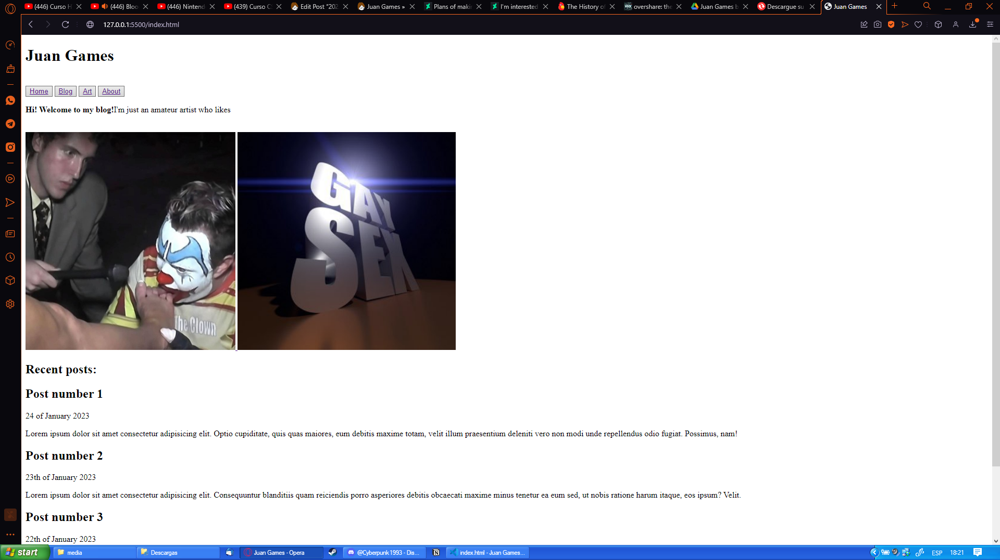

2023... Yeah, about that...
I'm gonna be honest, I have no idea on how to start this blog post, the proof being that I took a whole damm week to even start writing this. Hell, I'm finishing this on a February 16th.
I feel like I have this blog a little abandoned, and kinda lost some motivation to keep improving it. Months ago, I promised I would do a couple of things like redrawing the banner, changing the comment system etc.
But I ended up forgetting about it and procrastinated with this post
This project started by the end of the year 2021, when the idea struck on my mind after I saw an artist's blog made in blogger. I liked the concept of a website of my own whwere I could do stuff just like people used to in the early 2000's.
So in January 2nd of 2022 I published a journal entry on my Deviantart account, expressing the idea of making the website. Then I started working on it with Wix, uploading posts in there, DA and newgrounds.
But Wix was... Bad, to say the least, at least for my objective. I even bought the premium package, but I luckily was able to get a refund, and instead that money wennt to hostinger (my current server provider) which I'm really happy with.
Now that I had the website built in wordpress, I stopped writing posts on social media to do it here, doung the monthly update each (forgive my redundancy) month.
But I felt really unmotivated to keep doing those due lazyness and a lack of actual news to share.
And in top of the list, I have a lot of limirarions to make the website 100% like I want, with all those
"buy this extension" and "Buy the premium pack" bullshit that doesn't eve do what I want.
Then... What am I going to do with this project from now on?
Here's the kicker. I want to keep drawing and photography as a pure hobby, because I want to be a programmer as a full-time job. So I basically said "Fuck it" and started coding a website from scratch.
Although it started looking like this:
Pic taken on jan 25th, I only knew html at the time.
And at the time it looks like this:

Pic taken on Feb 15th, now with a bit of CSS knowledge.
So yeah, this means a whole bunch of changes.
The first one being that I'm going to stop with the monthly updates. I struggled keeping up because I had no actual news, and I hate publishing short posts of a few words (probably OCD lmao), so instead of actually publishing updates each month, I'll make them only if I have actual news to avoid this situation.
By the way, this website will be deleted soon and replaced with a single image while I develop the new one.
It will be in a week so when I do it.
I don't know exactly how it will look like, but it will be just a simple, single-paged website.
Although I'm still learning as you can see in the pic.
My goal is to get rid of both wordpress and, when I can, hostinger to use a home-made Apache server.
So the only bills I'll have to pay are the domain and the electric bill (screw spain goverment for the increment of the electric bill price btw).
I recently learnt that php id based post are the best option for new entries. the only thing being that instead of
"www.juangames.com/(lable)/(year)/(post name)", you'll probably see "www.juangames.com/post.php?id=x".
But hey, that's better than having every single post in a separated html document that may be obsolete over time.
So that's why I want to try doing that, I would be 100% in control of my website, the data and what I do with it.
It'll be a tough task, but over time I think it will worth it.
This is Juan Games, and I'll see you in my next website, cya. (^_^) /